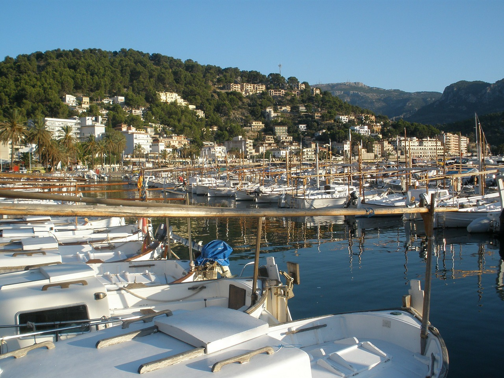

Felice Marinaio

Here at Felice Marinaio, we believe that food is best enjoyed in the right atmosphere.
Since 1964, when our flagship restaurant opened its doors,
we have strived to provide all our guests with the best possible dining experience.